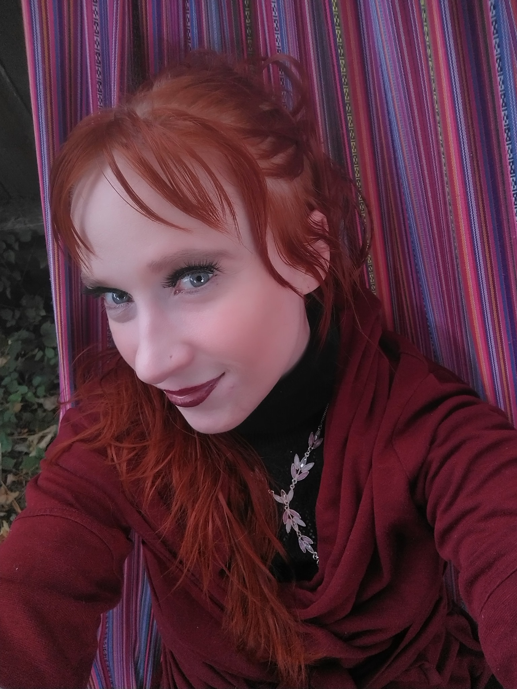

Welcome to my personal website! I'm Audrey Evergreene, a passionate and results-driven software engineer with a focus on front-end development. With a deep-rooted curiosity and a hunger for continuous learning, I thrive in fast-paced and innovative environments. Throughout my career, I have honed my skills in building engaging and intuitive user experiences. Proficient in modern JavaScript frameworks, such as React, and experienced in developing data-intensive applications, I have a solid foundation in delivering high-quality front-end solutions. But it's not just about technical expertise for me. I strongly believe in the power of collaboration and community. I actively contribute to open-source projects and immerse myself in developer communities, valuing the exchange of ideas and the collective growth that comes from diverse perspectives..

During my time managing a wellness center, I created a vibrant and supportive community. By organizing workshops, fostering open communication, and cultivating a welcoming environment, I witnessed firsthand the transformative power of community integration. Now, I am eager to bring my skills, passion for learning, and community-oriented mindset to an engineering team. The opportunity to work with an organization at the forefront of data infrastructure, enabling real-time insights and driving innovation, is truly exciting to me. As you explore my website, you'll find examples of my work, showcasing my ability to create visually appealing and scalable applications. I invite you to connect with me to discuss how my skills align with the challenges and opportunities at your company. Thank you for visiting my website, and I look forward to the possibility of collaborating with talented individuals to create a data-driven future.